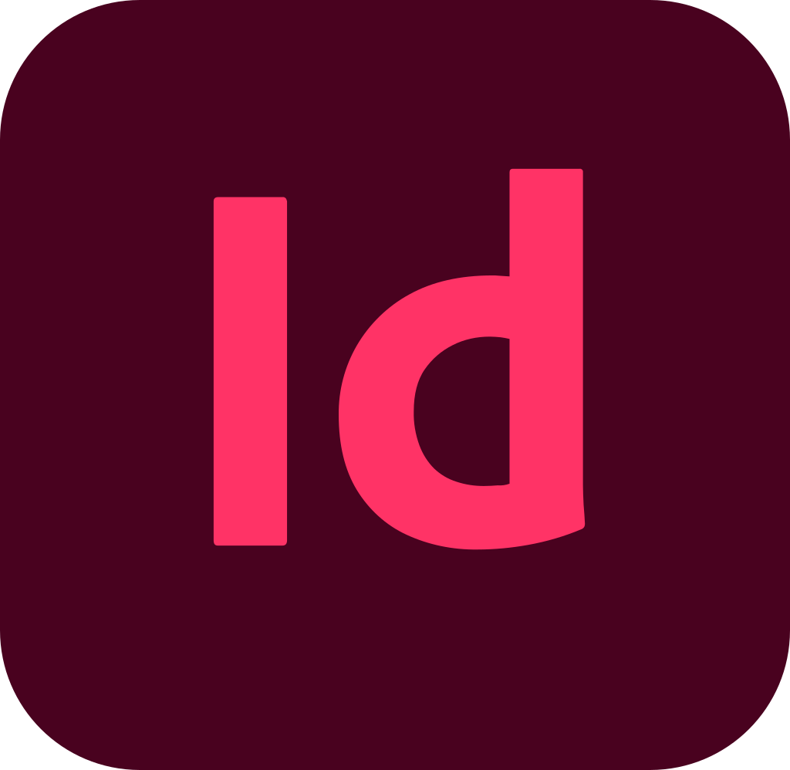

Après 2 ans passés en Polynésie française, me voilà en route pour la Réunion! Je suis un jeune directeur artistique passionné d’illustration, de motion design, de typographie et d’identité visuelle. J’ai étudié le design à l’ECV (École de Communication Visuelle) de Bordeaux où je me suis spécialisé en design interactif. Mon travail se démarque par l’association de ma créativité et d’une bonne maîtrise technique.
-
After 2 years spent in French Polynesia, here I am on my way to Reunion!
I’m a young art director passionate about illustration, motion design,
typography and visual identity. I studied design at ECV
(Creative School and Community) in Bordeaux where I specialized in interactive design.
My work is distinguished by the combination of my creativity and good technical mastery.
Formation
- Education and Qualifications
2011-2014 - Baccalauréat scientifique
2011-2014 - Scientific Baccalaureate
Lycée Laure Gatet - Périgueux
High School Laure Gatet - Périgueux
2014-2019 - Diplôme Niveau 1 - Master
2014-2019 - Master Degree Level 1
"Directeur Artistique en Communication Visuelle et Multimédia"
"Artistic Director in Visual Communication and Multimedia"
Spécialisé en Design Interactif - Mention "Bien"
Specialized in Interactive Design - Mention "Good"
École de Communication Visuelle (ECV) de Bordeaux
Creative School and Community ( ECV ) in Bordeaux
Compétences
- Skills


- 

Expérience
- Experience
2016 - Stage en entreprise
2016 - Graphic Internship
Imprimerie IOTA - P.A.O. - Saint-Astier
Imprimerie IOTA - computer-assisted publications - Saint-Astier
2017 - Stage en entreprise
2017 - Graphic Internship
Association Solinum - Réalisation d’une charte graphique et d’un site internet - Bordeaux
Association Solinum - Web Designer - Bordeaux
2018 - Stage en entreprise
2018 - Graphic Internship
Ataqana & SQAL - Réalisation d’identités visuelles et de vidéos en motion design - Bordeaux
Ataqana & SQAL - Motion Designer - Bordeaux
2019-2020 - CDI
2019-2020 - Permanent Contract
#Prox-i Marketing Services - Directeur artistique junior / Motion Designer - Papeete
#Prox-i Marketing Services - Junior Art Director / Motion Designer - Papeete
2020 - Freelance
2020 - Freelance
Directeur artistique / Motion Designer - Papeete
Art Director / Motion Designer - Papeete
Bénévolat
- Volunteering Experiences
Mars 2018 - Coaching de lycéens
March 2018 - Coach Trainer
Bénévole lors des journées Innov’EPA, j’ai aidé des lycéens à construire un projet, en faire la communication et le présenter devant un jury
Volunteer for Innov’EPA, I helped high school students to build a project, make the communication and present it to a jury
2014-2019 - Équipe Com’
2014-2019 - Com’ Team
Membre de l’équipe de communication de l’ECV, je l'ai représenté lors des journées portes ouvertes et des salons
As a member of the school’s communication team, I represented it at open houses and trade shows
2016-2018 - BDE
2016-2018 - Student Office
Membre du Bureau Des Étudiants 2 ans de suite
Member of the Student Office 2 years in a row
Récompenses
- Rewards
Lauréat d’un concours d’illustration
First prize of an illustration contest
Lauréat du concours pour la réalisation du logo de la Cour d’Appel de Bordeaux
Realization of the logo of the Court of Appeal of Bordeaux
Lauréat du concours pour la réalisation de l’identité visuelle de Tryo
First prize of the Achievement of Tryo’s visual identity
Wine&Me
Wine&Me
À la fin de l’hackathon organisé par l’ECV Digital, le projet a décroché le prix du meilleur projet webmarketing et est arrivé en demi-finale de la Morpheus Cup à Paris
At the end of the hackathon organized by ECV Digital, the project won the prize for the best webmarketing project and allowed us to reach the semi-finals of the Morpheus Cup in Paris

 Back to Top
Back to Top